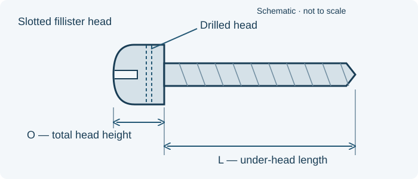

// TECHNICAL RESOURCES
MS35275 stainless drilled-fillister screws.
Look up MS35275 threads, under-head lengths and head dimensions. Filter the reference sizes and request a quote for the complete part number.
// DIMENSIONS & PART IDENTIFICATION
Drilled fillister-head screw length and head height

Schematic only; not to scale. Letter labels are keys for this illustration. Use the applicable part specification for dimensions, tolerances and measurement conventions.
// PART IDENTIFICATION
Identify the head, material and thread
MS35275 identifies passivated corrosion-resisting-steel machine screws with a drilled, slotted fillister head and UNC-2A threads. This table covers all 119 reviewed Table I dash numbers, 201–319, across 2-56 through 3/8-16. The drilled head, slot and material are part of the requirement.
// REFERENCE SIZES
MS35275 part-number and dimension table
Reference selections for identification and quotation. Webson confirms availability by inquiry; these rows do not indicate stocked inventory.
No matching entries. Clear the filters or try a shorter search.
Scroll sideways to see all columns. The first column stays visible.
| Part number | Thread | Length per drawing (in) | Length tolerance (in) | Head diameter limits A (in) | Total head height limits O (in) | Request pricing |
|---|---|---|---|---|---|---|
| MS35275-201 | 2-56 | 0.125 | +0.000 / −0.031 | 0.124–0.140 | 0.070–0.083 | Quote MS35275-201 → |
| MS35275-202 | 2-56 | 0.188 | +0.000 / −0.031 | 0.124–0.140 | 0.070–0.083 | Quote MS35275-202 → |
| MS35275-203 | 2-56 | 0.250 | +0.000 / −0.031 | 0.124–0.140 | 0.070–0.083 | Quote MS35275-203 → |
| MS35275-204 | 2-56 | 0.312 | +0.000 / −0.031 | 0.124–0.140 | 0.070–0.083 | Quote MS35275-204 → |
| MS35275-205 | 2-56 | 0.375 | +0.000 / −0.031 | 0.124–0.140 | 0.070–0.083 | Quote MS35275-205 → |
| MS35275-206 | 2-56 | 0.438 | +0.000 / −0.031 | 0.124–0.140 | 0.070–0.083 | Quote MS35275-206 → |
| MS35275-207 | 2-56 | 0.500 | +0.000 / −0.031 | 0.124–0.140 | 0.070–0.083 | Quote MS35275-207 → |
| MS35275-208 | 2-56 | 0.625 | +0.000 / −0.031 | 0.124–0.140 | 0.070–0.083 | Quote MS35275-208 → |
| MS35275-209 | 2-56 | 0.750 | +0.000 / −0.031 | 0.124–0.140 | 0.070–0.083 | Quote MS35275-209 → |
| MS35275-210 | 2-56 | 0.875 | +0.000 / −0.031 | 0.124–0.140 | 0.070–0.083 | Quote MS35275-210 → |
| MS35275-211 | 4-40 | 0.125 | +0.000 / −0.031 | 0.166–0.183 | 0.094–0.107 | Quote MS35275-211 → |
| MS35275-212 | 4-40 | 0.188 | +0.000 / −0.031 | 0.166–0.183 | 0.094–0.107 | Quote MS35275-212 → |
| MS35275-213 | 4-40 | 0.250 | +0.000 / −0.031 | 0.166–0.183 | 0.094–0.107 | Quote MS35275-213 → |
| MS35275-214 | 4-40 | 0.312 | +0.000 / −0.031 | 0.166–0.183 | 0.094–0.107 | Quote MS35275-214 → |
| MS35275-215 | 4-40 | 0.375 | +0.000 / −0.031 | 0.166–0.183 | 0.094–0.107 | Quote MS35275-215 → |
| MS35275-216 | 4-40 | 0.438 | +0.000 / −0.031 | 0.166–0.183 | 0.094–0.107 | Quote MS35275-216 → |
| MS35275-217 | 4-40 | 0.500 | +0.000 / −0.031 | 0.166–0.183 | 0.094–0.107 | Quote MS35275-217 → |
| MS35275-218 | 4-40 | 0.625 | +0.000 / −0.031 | 0.166–0.183 | 0.094–0.107 | Quote MS35275-218 → |
| MS35275-219 | 4-40 | 0.750 | +0.000 / −0.031 | 0.166–0.183 | 0.094–0.107 | Quote MS35275-219 → |
| MS35275-220 | 4-40 | 0.875 | +0.000 / −0.031 | 0.166–0.183 | 0.094–0.107 | Quote MS35275-220 → |
| MS35275-221 | 4-40 | 1.000 | +0.000 / −0.031 | 0.166–0.183 | 0.094–0.107 | Quote MS35275-221 → |
| MS35275-222 | 4-40 | 1.250 | +0.000 / −0.062 | 0.166–0.183 | 0.094–0.107 | Quote MS35275-222 → |
| MS35275-223 | 4-40 | 1.500 | +0.000 / −0.062 | 0.166–0.183 | 0.094–0.107 | Quote MS35275-223 → |
| MS35275-224 | 6-32 | 0.125 | +0.000 / −0.031 | 0.208–0.226 | 0.118–0.132 | Quote MS35275-224 → |
| MS35275-225 | 6-32 | 0.188 | +0.000 / −0.031 | 0.208–0.226 | 0.118–0.132 | Quote MS35275-225 → |
| MS35275-226 | 6-32 | 0.250 | +0.000 / −0.031 | 0.208–0.226 | 0.118–0.132 | Quote MS35275-226 → |
| MS35275-227 | 6-32 | 0.312 | +0.000 / −0.031 | 0.208–0.226 | 0.118–0.132 | Quote MS35275-227 → |
| MS35275-228 | 6-32 | 0.375 | +0.000 / −0.031 | 0.208–0.226 | 0.118–0.132 | Quote MS35275-228 → |
| MS35275-229 | 6-32 | 0.438 | +0.000 / −0.031 | 0.208–0.226 | 0.118–0.132 | Quote MS35275-229 → |
| MS35275-230 | 6-32 | 0.500 | +0.000 / −0.031 | 0.208–0.226 | 0.118–0.132 | Quote MS35275-230 → |
| MS35275-231 | 6-32 | 0.625 | +0.000 / −0.031 | 0.208–0.226 | 0.118–0.132 | Quote MS35275-231 → |
| MS35275-232 | 6-32 | 0.750 | +0.000 / −0.031 | 0.208–0.226 | 0.118–0.132 | Quote MS35275-232 → |
| MS35275-233 | 6-32 | 0.875 | +0.000 / −0.031 | 0.208–0.226 | 0.118–0.132 | Quote MS35275-233 → |
| MS35275-234 | 6-32 | 1.000 | +0.000 / −0.031 | 0.208–0.226 | 0.118–0.132 | Quote MS35275-234 → |
| MS35275-235 | 6-32 | 1.250 | +0.000 / −0.062 | 0.208–0.226 | 0.118–0.132 | Quote MS35275-235 → |
| MS35275-236 | 6-32 | 1.500 | +0.000 / −0.062 | 0.208–0.226 | 0.118–0.132 | Quote MS35275-236 → |
| MS35275-237 | 6-32 | 1.750 | +0.000 / −0.062 | 0.208–0.226 | 0.118–0.132 | Quote MS35275-237 → |
| MS35275-238 | 6-32 | 2.000 | +0.000 / −0.062 | 0.208–0.226 | 0.118–0.132 | Quote MS35275-238 → |
| MS35275-239 | 8-32 | 0.125 | +0.000 / −0.031 | 0.250–0.270 | 0.141–0.156 | Quote MS35275-239 → |
| MS35275-240 | 8-32 | 0.188 | +0.000 / −0.031 | 0.250–0.270 | 0.141–0.156 | Quote MS35275-240 → |
| MS35275-241 | 8-32 | 0.250 | +0.000 / −0.031 | 0.250–0.270 | 0.141–0.156 | Quote MS35275-241 → |
| MS35275-242 | 8-32 | 0.312 | +0.000 / −0.031 | 0.250–0.270 | 0.141–0.156 | Quote MS35275-242 → |
| MS35275-243 | 8-32 | 0.375 | +0.000 / −0.031 | 0.250–0.270 | 0.141–0.156 | Quote MS35275-243 → |
| MS35275-244 | 8-32 | 0.438 | +0.000 / −0.031 | 0.250–0.270 | 0.141–0.156 | Quote MS35275-244 → |
| MS35275-245 | 8-32 | 0.500 | +0.000 / −0.031 | 0.250–0.270 | 0.141–0.156 | Quote MS35275-245 → |
| MS35275-246 | 8-32 | 0.625 | +0.000 / −0.031 | 0.250–0.270 | 0.141–0.156 | Quote MS35275-246 → |
| MS35275-247 | 8-32 | 0.750 | +0.000 / −0.031 | 0.250–0.270 | 0.141–0.156 | Quote MS35275-247 → |
| MS35275-248 | 8-32 | 0.875 | +0.000 / −0.031 | 0.250–0.270 | 0.141–0.156 | Quote MS35275-248 → |
| MS35275-249 | 8-32 | 1.000 | +0.000 / −0.031 | 0.250–0.270 | 0.141–0.156 | Quote MS35275-249 → |
| MS35275-250 | 8-32 | 1.250 | +0.000 / −0.062 | 0.250–0.270 | 0.141–0.156 | Quote MS35275-250 → |
| MS35275-251 | 8-32 | 1.500 | +0.000 / −0.062 | 0.250–0.270 | 0.141–0.156 | Quote MS35275-251 → |
| MS35275-252 | 8-32 | 1.750 | +0.000 / −0.062 | 0.250–0.270 | 0.141–0.156 | Quote MS35275-252 → |
| MS35275-253 | 8-32 | 2.000 | +0.000 / −0.062 | 0.250–0.270 | 0.141–0.156 | Quote MS35275-253 → |
| MS35275-254 | 8-32 | 2.250 | +0.000 / −0.094 | 0.250–0.270 | 0.141–0.156 | Quote MS35275-254 → |
| MS35275-255 | 8-32 | 2.500 | +0.000 / −0.094 | 0.250–0.270 | 0.141–0.156 | Quote MS35275-255 → |
| MS35275-256 | 8-32 | 2.750 | +0.000 / −0.094 | 0.250–0.270 | 0.141–0.156 | Quote MS35275-256 → |
| MS35275-257 | 8-32 | 3.000 | +0.000 / −0.094 | 0.250–0.270 | 0.141–0.156 | Quote MS35275-257 → |
| MS35275-258 | 10-24 | 0.188 | +0.000 / −0.031 | 0.292–0.313 | 0.165–0.180 | Quote MS35275-258 → |
| MS35275-259 | 10-24 | 0.250 | +0.000 / −0.031 | 0.292–0.313 | 0.165–0.180 | Quote MS35275-259 → |
| MS35275-260 | 10-24 | 0.312 | +0.000 / −0.031 | 0.292–0.313 | 0.165–0.180 | Quote MS35275-260 → |
| MS35275-261 | 10-24 | 0.375 | +0.000 / −0.031 | 0.292–0.313 | 0.165–0.180 | Quote MS35275-261 → |
| MS35275-262 | 10-24 | 0.438 | +0.000 / −0.031 | 0.292–0.313 | 0.165–0.180 | Quote MS35275-262 → |
| MS35275-263 | 10-24 | 0.500 | +0.000 / −0.031 | 0.292–0.313 | 0.165–0.180 | Quote MS35275-263 → |
| MS35275-264 | 10-24 | 0.625 | +0.000 / −0.031 | 0.292–0.313 | 0.165–0.180 | Quote MS35275-264 → |
| MS35275-265 | 10-24 | 0.750 | +0.000 / −0.031 | 0.292–0.313 | 0.165–0.180 | Quote MS35275-265 → |
| MS35275-266 | 10-24 | 0.875 | +0.000 / −0.031 | 0.292–0.313 | 0.165–0.180 | Quote MS35275-266 → |
| MS35275-267 | 10-24 | 1.000 | +0.000 / −0.031 | 0.292–0.313 | 0.165–0.180 | Quote MS35275-267 → |
| MS35275-268 | 10-24 | 1.250 | +0.000 / −0.062 | 0.292–0.313 | 0.165–0.180 | Quote MS35275-268 → |
| MS35275-269 | 10-24 | 1.500 | +0.000 / −0.062 | 0.292–0.313 | 0.165–0.180 | Quote MS35275-269 → |
| MS35275-270 | 10-24 | 1.750 | +0.000 / −0.062 | 0.292–0.313 | 0.165–0.180 | Quote MS35275-270 → |
| MS35275-271 | 10-24 | 2.000 | +0.000 / −0.062 | 0.292–0.313 | 0.165–0.180 | Quote MS35275-271 → |
| MS35275-272 | 10-24 | 2.250 | +0.000 / −0.094 | 0.292–0.313 | 0.165–0.180 | Quote MS35275-272 → |
| MS35275-273 | 10-24 | 2.500 | +0.000 / −0.094 | 0.292–0.313 | 0.165–0.180 | Quote MS35275-273 → |
| MS35275-274 | 10-24 | 2.750 | +0.000 / −0.094 | 0.292–0.313 | 0.165–0.180 | Quote MS35275-274 → |
| MS35275-275 | 10-24 | 3.000 | +0.000 / −0.094 | 0.292–0.313 | 0.165–0.180 | Quote MS35275-275 → |
| MS35275-276 | 1/4-20 | 0.312 | +0.000 / −0.031 | 0.389–0.414 | 0.219–0.237 | Quote MS35275-276 → |
| MS35275-277 | 1/4-20 | 0.375 | +0.000 / −0.031 | 0.389–0.414 | 0.219–0.237 | Quote MS35275-277 → |
| MS35275-278 | 1/4-20 | 0.438 | +0.000 / −0.031 | 0.389–0.414 | 0.219–0.237 | Quote MS35275-278 → |
| MS35275-279 | 1/4-20 | 0.500 | +0.000 / −0.031 | 0.389–0.414 | 0.219–0.237 | Quote MS35275-279 → |
| MS35275-280 | 1/4-20 | 0.625 | +0.000 / −0.031 | 0.389–0.414 | 0.219–0.237 | Quote MS35275-280 → |
| MS35275-281 | 1/4-20 | 0.750 | +0.000 / −0.031 | 0.389–0.414 | 0.219–0.237 | Quote MS35275-281 → |
| MS35275-282 | 1/4-20 | 0.875 | +0.000 / −0.031 | 0.389–0.414 | 0.219–0.237 | Quote MS35275-282 → |
| MS35275-283 | 1/4-20 | 1.000 | +0.000 / −0.031 | 0.389–0.414 | 0.219–0.237 | Quote MS35275-283 → |
| MS35275-284 | 1/4-20 | 1.250 | +0.000 / −0.062 | 0.389–0.414 | 0.219–0.237 | Quote MS35275-284 → |
| MS35275-285 | 1/4-20 | 1.500 | +0.000 / −0.062 | 0.389–0.414 | 0.219–0.237 | Quote MS35275-285 → |
| MS35275-286 | 1/4-20 | 1.750 | +0.000 / −0.062 | 0.389–0.414 | 0.219–0.237 | Quote MS35275-286 → |
| MS35275-287 | 1/4-20 | 2.000 | +0.000 / −0.062 | 0.389–0.414 | 0.219–0.237 | Quote MS35275-287 → |
| MS35275-288 | 1/4-20 | 2.250 | +0.000 / −0.094 | 0.389–0.414 | 0.219–0.237 | Quote MS35275-288 → |
| MS35275-289 | 1/4-20 | 2.500 | +0.000 / −0.094 | 0.389–0.414 | 0.219–0.237 | Quote MS35275-289 → |
| MS35275-290 | 1/4-20 | 2.750 | +0.000 / −0.094 | 0.389–0.414 | 0.219–0.237 | Quote MS35275-290 → |
| MS35275-291 | 1/4-20 | 3.000 | +0.000 / −0.094 | 0.389–0.414 | 0.219–0.237 | Quote MS35275-291 → |
| MS35275-292 | 5/16-18 | 0.375 | +0.000 / −0.031 | 0.490–0.518 | 0.276–0.295 | Quote MS35275-292 → |
| MS35275-293 | 5/16-18 | 0.438 | +0.000 / −0.031 | 0.490–0.518 | 0.276–0.295 | Quote MS35275-293 → |
| MS35275-294 | 5/16-18 | 0.500 | +0.000 / −0.031 | 0.490–0.518 | 0.276–0.295 | Quote MS35275-294 → |
| MS35275-295 | 5/16-18 | 0.625 | +0.000 / −0.031 | 0.490–0.518 | 0.276–0.295 | Quote MS35275-295 → |
| MS35275-296 | 5/16-18 | 0.750 | +0.000 / −0.031 | 0.490–0.518 | 0.276–0.295 | Quote MS35275-296 → |
| MS35275-297 | 5/16-18 | 0.875 | +0.000 / −0.031 | 0.490–0.518 | 0.276–0.295 | Quote MS35275-297 → |
| MS35275-298 | 5/16-18 | 1.000 | +0.000 / −0.031 | 0.490–0.518 | 0.276–0.295 | Quote MS35275-298 → |
| MS35275-299 | 5/16-18 | 1.250 | +0.000 / −0.062 | 0.490–0.518 | 0.276–0.295 | Quote MS35275-299 → |
| MS35275-300 | 5/16-18 | 1.500 | +0.000 / −0.062 | 0.490–0.518 | 0.276–0.295 | Quote MS35275-300 → |
| MS35275-301 | 5/16-18 | 1.750 | +0.000 / −0.062 | 0.490–0.518 | 0.276–0.295 | Quote MS35275-301 → |
| MS35275-302 | 5/16-18 | 2.000 | +0.000 / −0.062 | 0.490–0.518 | 0.276–0.295 | Quote MS35275-302 → |
| MS35275-303 | 5/16-18 | 2.250 | +0.000 / −0.094 | 0.490–0.518 | 0.276–0.295 | Quote MS35275-303 → |
| MS35275-304 | 5/16-18 | 2.500 | +0.000 / −0.094 | 0.490–0.518 | 0.276–0.295 | Quote MS35275-304 → |
| MS35275-305 | 5/16-18 | 2.750 | +0.000 / −0.094 | 0.490–0.518 | 0.276–0.295 | Quote MS35275-305 → |
| MS35275-306 | 5/16-18 | 3.000 | +0.000 / −0.094 | 0.490–0.518 | 0.276–0.295 | Quote MS35275-306 → |
| MS35275-307 | 3/8-16 | 0.500 | +0.000 / −0.031 | 0.590–0.622 | 0.333–0.355 | Quote MS35275-307 → |
| MS35275-308 | 3/8-16 | 0.625 | +0.000 / −0.031 | 0.590–0.622 | 0.333–0.355 | Quote MS35275-308 → |
| MS35275-309 | 3/8-16 | 0.750 | +0.000 / −0.031 | 0.590–0.622 | 0.333–0.355 | Quote MS35275-309 → |
| MS35275-310 | 3/8-16 | 0.875 | +0.000 / −0.031 | 0.590–0.622 | 0.333–0.355 | Quote MS35275-310 → |
| MS35275-311 | 3/8-16 | 1.000 | +0.000 / −0.031 | 0.590–0.622 | 0.333–0.355 | Quote MS35275-311 → |
| MS35275-312 | 3/8-16 | 1.250 | +0.000 / −0.062 | 0.590–0.622 | 0.333–0.355 | Quote MS35275-312 → |
| MS35275-313 | 3/8-16 | 1.500 | +0.000 / −0.062 | 0.590–0.622 | 0.333–0.355 | Quote MS35275-313 → |
| MS35275-314 | 3/8-16 | 1.750 | +0.000 / −0.062 | 0.590–0.622 | 0.333–0.355 | Quote MS35275-314 → |
| MS35275-315 | 3/8-16 | 2.000 | +0.000 / −0.062 | 0.590–0.622 | 0.333–0.355 | Quote MS35275-315 → |
| MS35275-316 | 3/8-16 | 2.250 | +0.000 / −0.094 | 0.590–0.622 | 0.333–0.355 | Quote MS35275-316 → |
| MS35275-317 | 3/8-16 | 2.500 | +0.000 / −0.094 | 0.590–0.622 | 0.333–0.355 | Quote MS35275-317 → |
| MS35275-318 | 3/8-16 | 2.750 | +0.000 / −0.094 | 0.590–0.622 | 0.333–0.355 | Quote MS35275-318 → |
| MS35275-319 | 3/8-16 | 3.000 | +0.000 / −0.094 | 0.590–0.622 | 0.333–0.355 | Quote MS35275-319 → |
All dimensions are in inches. Printed decimal lengths such as 0.188, 0.312, 0.438 or 0.562 are retained where listed. The length tolerance column shows separate positive and negative allowances; these are not symmetric ± limits. Head dimensions are minimum–maximum drawing limits.
// MEASUREMENT GUIDE
Measure length and head geometry
L is measured from the bearing surface beneath the head to the screw tip. O is total axial head height, including the dome; H is the height of the straight head side. The head is outside the under-head length measurement.
The reviewed issue requires complete threads to within two threads of the head, or closer if practicable, for screws 2.00 inches long and shorter. Longer screws have a minimum 1.50-inch thread length. Overall screw length does not establish a fixed unthreaded grip.
// HEAD DETAILS
Check the slot and drilled head
No matching entries. Clear the filters or try a shorter search.
Scroll sideways to see all columns. The first column stays visible.
| Thread | Head side height limits H (in) | Slot width limits J (in) | Drilled hole diameter nominal (in) |
|---|---|---|---|
| 2-56 | 0.055–0.062 | 0.023–0.031 | 0.031 |
| 4-40 | 0.072–0.079 | 0.031–0.039 | 0.037 |
| 6-32 | 0.089–0.096 | 0.039–0.048 | 0.046 |
| 8-32 | 0.106–0.113 | 0.045–0.054 | 0.046 |
| 10-24 | 0.123–0.130 | 0.050–0.060 | 0.046 |
| 1/4-20 | 0.161–0.170 | 0.064–0.075 | 0.062 |
| 5/16-18 | 0.201–0.211 | 0.072–0.084 | 0.070 |
| 3/8-16 | 0.242–0.253 | 0.081–0.094 | 0.070 |
The drilled hole is approximately at right angles to the slot and may break through the slot bottom in the reviewed drawing. The hole diameter is nominal; the head-side and slot values are minimum–maximum limits. The full issue controls drilling location, tolerances, slot depth, radii and edge treatment.
// ORDERING DETAILS
Read the complete part number
MS35275-217 is a 4-40 screw with a 0.500-inch under-head length. MS35275-263 is a 10-24 screw with the same listed length. Do not carry a dash number from the carbon-steel MS35265 family into this stainless family.
The reviewed material note permits specified corrosion-resisting steel types, including 302, 303, 304, 305, 316 and 384, with a minimum ultimate tensile strength of 80,000 psi. The family name alone does not guarantee Type 316. Preserve any specific material and certification requirement on your drawing.
// FAMILY COMPARISON
Compare related screw families
MS35276 is the stainless fine-thread drilled-fillister family. Send its full designation for review; the MS35275 coarse-thread table does not establish an MS35276 conversion.
// DRAWING REQUIREMENTS
Match the governing drawing issue
Dimensions summarize MS35275B, sheets 1–2, 14 June 1976. These are selected historical references for purchasing identification. Later amendments or notices may apply. The issue required by your drawing controls full geometry, thread, material, finish and inspection requirements. A successor standard name does not automatically authorize a part-number change or substitution.
// BUYER CHECKLIST
Prepare the requirement for quotation
- Complete designation, including all material, finish and locking suffixes.
- Quantity, required delivery date and controlling drawing or specification issue.
- Required certificates, source restrictions and lot traceability.
// SOURCE WITH WEBSON
Have a part number or bill of material?
Send the complete designation, quantity, required delivery date and documentation requirements. Webson will review your requirement for quotation.
Certified distribution. Requirements reviewed.
Webson is an AS9120B and ISO 9001:2015 certified distributor. Include required certificates, lot traceability and source restrictions with your inquiry so documentation and inspection requirements can be reviewed for the order.
Need a drawing-specific part?
Explore custom screws and bolts when the required geometry, material or finish calls for a made-to-print component. Your drawing and approval requirements define the custom configuration; Webson coordinates sourcing through manufacturing partners.